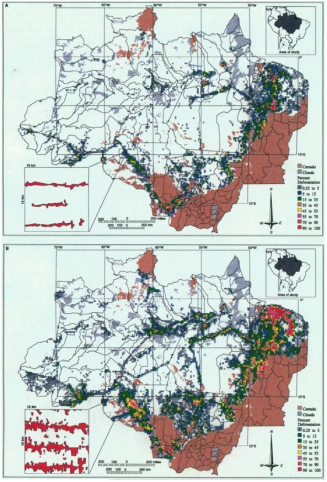
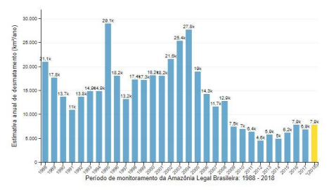
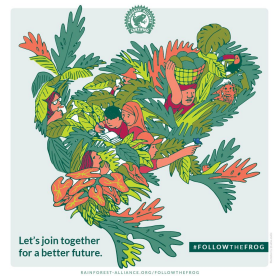
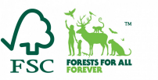
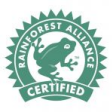
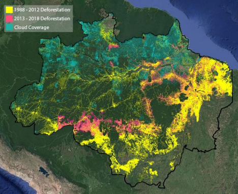

Conservation on Aisle Four
The Rise and Failure of Eco-Commerce in the 1980s and 1990s
Capstone Summary: The romanticized image of the Rainforest used by environmentalists to promote eco-commerce, the following boom in Rainforest products as other US brands exploited the Rainforest image, and environmental groups' efforts to make genuine eco-commerce easily identifiable within the market oversaturated with Rainforest products, resulted in the over-simplification of the issues facing the Amazon rain forest, and a consumer base that was invested in a conceptual idea of the Rainforest, rather than the Amazon rain forest as a physical place with environmental, social, and economic needs.
Abstract
In the late 1980s, rain forest conservation groups and individual environmentalists, alarmed at the rapid deforestation of the Amazon rain forest, decided to employ eco-commerce as a tool to direct purchasing dollars away from industries harming the rainforest in favor of those practicing responsible rainforest policies.
Environmentalists characterized United States (US) consumers who purchased "Rainforest friendly" products as moral, charitable, and eco-conscious, while portraying the Amazon rain forest and its peoples as exotic and full of vitality. Initially, conservation groups, such as the non-profit Cultural Survival Enterprises, saw this glamorized version of the "Rainforest" as an effective branding tool to build a demand for the sustainable harvesting of rain forest products, creating a profitable alternative to deforestation.
However, rather than exclusively spurring interest in the conservation of the Amazon rain forest, this romanticization of the rain forest led to a wave of exoticism centered around the conceptual "Rainforest". US brands with no real ties to the conservation of the Amazon rain forest, like Rainforest Cafe, quickly learned to exploit the public's fascination with the Rainforest. The result was a market oversaturated with "Rainforest" products and experiences.
Environmental groups, such as the Rainforest Alliance, responded with efforts to demand transparency and make genuine eco-commerce easy for consumers to recognize. These efforts had to cater to the image of the Rainforest that had enchanted the imaginations of US consumers. However, NGOs' efforts also had to work within the new expectation of "comfortable environmentalism" - meaning, people expected their efforts to "Save the Rainforest" to coincide with a favorite shampoo or ice cream.
Unfortunately, the original eco-commerce failed to create a practical system for harvesting non-timber forest products (NTFPs), with a negligible return on its promises of preventing deforestation. The three phases of eco-commerce - Emergence, Corruption and Adaptation - ultimately resulted in the over-simplification of the issues facing the Amazon rain forest, and a consumer base invested in the conceptual idea of the Rainforest, rather than the Amazon rain forest as an inhabited, vulnerable place. Consequently, the focus of environmental efforts shifted away from the Amazon rain forest, which has continued to decline, despite the best intentions of the conservationists who had launched eco-commerce to save the rain forest.
Relevant Definitions
- Eco-commerce is sale and purchase of products that benefit the conservation and economy of the rainforest, either through donated profits or supporting a local producer of non-timber forest products (NTFPs).
- Non-timber forest products are products that are local to the rain forest, as opposed to an imported crop such as soybeans, that can be grown without deforestation and have historically been harvested by indigenous peoples.
- The phrase “rain forest”, as two separate words and lower case, refers to the rain forest as a physical region. For this paper, it refers to the Amazon rain forest. “Rainforest”, as one word and capitalized, refers to the marketed romanticized image of the rain forest.
- Exoticism is "the quality of being unusual and exciting because of coming (or seeming to come) from far away, especially a tropical country."
- Greenwashing is the use of images or branding that the public associates with environmentally responsible businesses, by a company with no or little environmental commitments, in order to profit off of the public's false assumption.
- Comfortable Environmentalism is an act of sustainability that is easily incorporated into one's day-to-day life, giving the customer the satisfaction of "doing good" with little effort, sometimes even getting a treat for themselves in the process.
This paper evaluates the three phases of eco-commerce: Emergence, Corruption and Adaptation. Each phase is considered in terms of intent, image, and impact, in order to track the evolution of the marketing and degradation of the Amazon rain forest.
Historical Background
The Amazon rain forest has a long history of exploitation in both its resources and people. When Spanish explorers first arrived in South America in 1492, they established the "Pristine Myth" - the idea that the Americas were largely untouched before Spanish discovery, assuming that native people had not tapped into the rain forest's potential as a large resource up for the taking. This myth is analogous to the myth of "El Dorado," another story that hints of untold riches at the heart of the forest.
In the 20th century, the United States perceived and used the Amazon rainforest as a seemingly boundless resource for the production of raw materials such as timber, rubber, soy, beef, and more. During WWII, the United States took advantage of the cheap price of rubber from Brazil and financed a boom in the Brazilian industry. Wealthy Brazilian rubber barons transported workers (often indigenous people), to rubber estates, told the workers they were in debt from travel fare, and forbade them to leave until they had paid off their impossible debt. Thousands died in this position, while the US funneled millions of dollars into the industry. In the 1950s, Brazilian agricultural research organization EMBRAPA partnered with US agronomists to engineer a soybean hybrid that could thrive in the Amazon's soil. Soybeans became a major crop and required land clearing in order to grow; farmers burned down trees to clear the land, as the minerals of the ash were necessary to make the Amazon soil arable.
In the 1960s, the mass industrialization of trades all over the world introduced a new scale of environmental damages. This caught the attention of environmentalists and sparked the establishment of many environmental non-governmental organizations (NGOs), such as The Environmental Defense Fund and Friends of the Earth. US Congress officially established the National Park Foundation in 1967 to promote conservation in the US.
In Brazil, tropical deforestation for pasture land rose as the cattle population doubled, encouraged by cheap beef exports to the US and financed by the World Bank and the International Development Bank. The rate of deforestation accelerated when a military coup in 1964 brought to power a new government that sought to eliminate inefficiencies in industries, and cared little about labor and land rights.
The degradation of the Amazon rain forest was recognized internationally as a major environmental problem during this period. The response of US conservation groups to Amazon deforestation followed the US system of land reservation and national parks - a method that addressed environmental issues only, not the social issues of indigenous people.
In the late 1980s, there was more global recognition of the social issues of the indigenous people and the landless poor of the Amazon, as worker movements in Brazil were established and captured international attention. One of the most prominent groups was the Landless Workers Movement (Movimento dos Trabalhadores Rurais Sem Terra), founded in 1984, which called for fundamental changes in the priorities of farming in Brazil. Activist and rubber tapper Chico Mendes led the Xapuri Rural Workers Union and became the international face of the workers movement, testifying before the US Senate Budget Committee and receiving the UN Environment Program Global 500 award. On December 22, 1988, Mendes was assassinated in his Xapuri home by the son of a notorious rancher. Because of his international connections, his assassination made news around the world, and US media coverage on deforestation in the Amazon rain forest tripled after his death.
Mendes' death coincided with Landsat Satellite's publication of satellite data highlighting the rapid rate of deforestation, using images from NASA's Goddard Space Flight Center and the University of New Hampshire's Institute of Earth, Oceans, and Space, tracking changes in forest coverage from 1975 to 1988. The rate of deforestation was 15,900 km2/year (Brazil's INPE estimated an even higher rate of 21,100 km2/year). The numbers were shocking to the US public and were more impactful for being displayed in a simple, visual way through satellite images.

The assassination of Mendes, the release of satellite data, and an unusually persistent heat wave in the northeastern United States created global demand for a solution to the multitude of problems that plagued the Amazon rain forest. In the 1980s alone, at least six NGOs with the word "Rainforest" in their name were established. It is within this context of international interest, Brazilian social movements, and new Rainforest NGOs that environmentalists and social activists were asking the question: how do we save the rain forest and save its people?
The Emergence of Eco-Commerce
The plethora of new Rainforest NGOs contended that the answer to the Amazon's struggles was eco-commerce. In order to guarantee its success, they marketed eco-friendly products in a manner that portrayed the Amazon and its peoples as exotic, innocent and full of vitality, while allowing US consumers to see themselves as moral, charitable, and eco-conscious. The romanticized version of the "Rainforest" was an instant hit in the United States market, creating a huge demand for eco-commerce.
Soon, NGOs and eco-commerce brands found that both the Rainforest image and their own sustainability promises were out of their control. The original intent of the push for eco-commerce was the genuine wish to sustain the Amazon rain forest, along with excitement for community-based conservation - a movement that emerged in the late 1980s and also strove to address social issues, departing from the typical US national park approach that separates nature from culture by displacing people from land. Community-based conservation in the Amazon rain forest focused on supporting local communities that produced non-timber forest products (NTFPs) in a sustainable, small-scale way. Chico Mendes fought for extractive reserves - land reserved for the harvesting of NTFPs by indigenous populations.
Many NGOs performed studies that proposed the selling of NTFPs, such as nuts, seeds, herbs and fruits, as a viable alternative to slash and burn harvesting. Studies extrapolated that workers could make just as much money from land used to produce Brazil nuts as if they used that land to produce beef, with even greater profits when NTFP producers made trade partnerships with groups promoting community-based conservation.
The next task for environmental groups was to get the public to care about community-based conservation and the harvesting of NTFPs. An example is a 1992 advertisement in The Guardian, sponsored by Friends of the Earth, titled: "You Want Me to Stop Killing the Rainforest. What Should I Do - Kill My Children?" The article focused on a poor Brazilian farmer named Silvero, forced off his land by large cattle ranchers, who cleared 20 acres to plant maize, coffee, cacao, and grass for his small herd of cows, explaining that people like Silvero are a large cause of deforestation and that conservation groups must provide an alternative business, such as wild fruit harvesting or bee-keeping.
The Friends of the Earth advertisement was an attempt to capture the attention of consumers by showing them the faces of people in the Amazon - not typical of the image used to promote eco-commerce to the US public. In general, initial eco-commerce portrayed the Amazon rain forest as exotic and uninhabited, the consumer who buys Rainforest eco-commerce as moral, and the act of buying as a simple and convenient way to save the Rainforest.
One of the first major steps in the marketing of eco-commerce was a slight but significant change in language: the "Amazon rain forest" became the "Rainforest." This one-word form proved more marketable and allowed for catchy branding slogans like "Save the Rainforest." The first use of "Rainforest" in the New York Times was in 1988, while the use of "rain forest" goes back to 1925.
Eco-commerce depicted the Amazon rain forest as exotic and pure, building on "The Pristine Myth" by portraying the Amazon Rainforest as the last of the world's untouched land. Even though NTFPs were meant to support the people of the Amazon rain forest, the Rainforest products rarely highlighted local people in the image of the product.
Rainforest friendly products appealed to US consumers because they implied that buying a Rainforest product was not only a standard act of consumerism, but was actually an act of charity or conservation, as well. Positive coverage from the press reinforced the morality and exoticness of eco-commerce. An example is the coverage Ben & Jerry's ice cream flavor Rainforest Crunch received, made with Brazil nuts from Community Products Inc. (CPI). The New York Times described how Rainforest Crunch and other products help the Amazon rain forest by using ingredients that support local sustainable industries there; Ben Cohen, co-founder of both Ben & Jerry's and Cultural Survival Enterprises, concisely described Rainforest Crunch as a "moral reason to munch."
Rainforest products also introduced the concept of comfortable environmentalism to US consumers. Eco-commerce was part of a for-profit system, living half in the world of conservation and half in the world of capitalism, both of which consumers could enjoy. Customers could conveniently combine sustainability with a shopping spree and save the rainforest from the comfort of their local mall or grocery store. For example, British musician Sting held concerts to fund his non-profit the Rainforest Foundation.
The development of the Rainforest image to promote sustainable products parallels the timeline of other movements, such as the Fair Trade movement, which began in the 1960s as developing countries pushed for "Trade not Aid" - a shift from first world countries owning all industries to a system where developing countries were involved in industry and the global economy. While this had the "moral" appeal that Rainforest products had, it also humanized the producers, rather than romanticize them.
Eco-commerce flew off the shelf and demand soared. By 1990, US companies had twenty-one Rainforest products on the market, with seventy-five more in testing. From 1991 to 1992, sales of Rainforest products quadrupled. Cultural Survival Enterprises sold approximately 2.5 million dollars' worth of forest products in 1992.
Small scale Amazonian NTFP businesses were unable to keep up with the high demands of US industry, leading eco-commerce businesses to reduce their commitment to conservation or face failure. Jason Clay, director of Cultural Survival Enterprises, admitted that he "may be creating a surge in demand that the Amazon's rickety marketing system will be unable to meet," giving the example of The Body Shop's asking for 80 tons of copaiba oil a year, while the Brazilian Amazon only produced 60 tons a year. Several NTFP producers felt the pressure to overharvest, making their own practices unsustainable and sometimes causing deforestation.
This overload of the NTFP system was a factor in the case of Ben & Jerry's Rainforest Crunch. CPI planned to donate 60% of its profits but functioned as a for-profit business, buying a Xapuri co-op's brazil nuts through Cultural Survival Enterprises. The demand for the ice cream flavor overwhelmed the small Xapuri co-op - Clay noted that a large candy company "uses 70 metric tons of nuts per eight-hour shift, a year's production of the Xapuri nutshelling plant." When the nuts got to CPI, they sometimes had cigarette butts and shell casings in the mix, along with coliform bacteria; only 5% of their brazil nuts ended up coming from the indigenous co-op that they based their claims of social responsibility on. The ice cream flavor was discontinued in 1996 and CPI has since gone bankrupt.

Throughout this phase, approximately 1988 to the mid-90s, the degradation of the Amazon rain forest continued. In 1990, with twenty-one Rainforest products on the market, deforestation dropped to 11,000 km2/year. In 1992, when sales of Rainforest products quadrupled, deforestation rose to 13,800 km2/year. By 1994, the number was up to 14,900 km2/year. Original eco-commerce may have contributed to the initial dip in deforestation, but combined with the 1992 surge and the fact that NTFP businesses were not set up to be economically and environmentally viable long-term, it is clear original eco-commerce was not the ultimate antidote to deforestation it was expected to be.
Overall, the emergence of eco-commerce successfully generated excitement and demand but did not direct that excitement towards genuine conservation. The underdeveloped systems for sourcing NTFPs from small-scale operations could not meet the high demands of the US market.
Corruption of Eco-Commerce
The corruption phase of eco-commerce began as multiple brands learned to exploit "Rainforest" interest, over-saturating the market and creating an environment where US consumers conflated eco-commerce with any product using the "Rainforest" image. The fabricated Rainforest image became increasingly divorced from the actual Amazon rain forest.
The intent of this phase was purely profit. Companies discovered that the Rainforest image was immensely popular and profitable, but that bold sustainable promises could bring profits to an end - so foregoing actual conservation measures while simply using the images and branding of the Amazon Rainforest had no repercussions and was very profitable.
A prime example is Rainforest Cafe, a themed restaurant with the slogan "A Wild Place to Eat!" The first cafe opened in 1995 at the Mall of America, fully transformed into a fabricated Rainforest complete with live (now animatronic) animals, fish tanks, indoor waterfalls, thunder sound effects, and a conveniently placed gift shop. As of the writing of this paper, there are 45 locations world-wide, and the Rainforest Cafe holds the record for top grossing restaurant concept.
A 1997 Observer article, "That's Ecotainment: It's A Jungle In There," took a critical look at the growth and intent of Rainforest Cafe, noting that Rainforest Cafe Inc. spends a mere 1.25% of its profits on educational outreach. Founder Steven Schussler defended his company's commitment, acknowledging that a business "can go a long way with the environmental side of it, and some people will criticize us for not going far enough. We make no apologies for making money," and insisting "it is absolute insanity to say that we're exploiting the rainforest. We built our own rainforest. And we serve quadruple-A quality food."
Some ventures even adopted practices detrimental to the Amazon rain forest while exploiting its image for profit. Rainforest installations in zoos, theme parks, and casinos were massively unsustainable to build and maintain, especially for heat and humidity control - the Omaha zoo's bills for gas, electricity, and water added up to $355,000 in 1996.
The image of this phase is a more gratuitously exaggerated Rainforest, without any indication of an environmental connection - "a largely unbroken expanse of highly iconic, decidedly flamboyant flora and fauna." Another example is a Raw Vanilla fragrance advertisement in Vogue's October 1996 issue, showing a white man and woman in a Rainforest setting, undressed and kissing in a river, proclaiming "In the Raw Vanilla. It's like meeting in the Rainforest."
Many other brands used the Rainforest image for marketing. In 1994, Jeff Bezos settled on the name Amazon for his online book company, thinking it was perfect as it was "exotic and different" and implied the vastness of the Amazon - despite the company having no actual connection to the Amazon rain forest. Another example is Tarte makeup, founded in 1999, whose product Amazonian Clay and Annatto Body Bronzer was described as giving the consumer "a true Brazilian bronze bombshell finish."
The impact of the corruption of eco-commerce was the over saturation of Rainforest products, with a wide range of actual investment in conservation, further separating the romanticized Rainforest image from the conservation movement and from the Amazon rain forest as a place. A 1997 Wall Street Journal article, "Rain Forests: Latest Craze to Sprout Up in U.S. Cities," illustrates how Rainforest exhibits dramatically increased in the 1990s, with 50 US zoos adding a Rainforest section and Las Vegas casinos commissioning Rainforest installations.
The degradation of the rain forest primarily increased in this phase. The rate of deforestation rose from 1994's rate of 14,900 km2/year to 29,100 km2/year in 1995 - the highest rate in history, including data from 1988 to 2017. The rate dropped to 18,200 km2/year in 1996, and 13,200 km2/year in 1997.
Overall, the corruption phase of eco-commerce caused a market overcrowded with Rainforest imagery. Genuine eco-commerce and brands simply exploiting the Rainforest image sat side by side in a grocery aisle or department store; the fact they became relatively indistinguishable shows how the focus on conservation and NTFPs was not evident to the consumer.
Adaptation of Eco-Commerce
Environmental groups and Rainforest-specific NGOs were aware that the Rainforest image had spun out of their control. They wanted to create a method of identifying products that were truly part of a system that responsibly sourced NTFPs, adjusting their campaigns to the context of comfortable environmentalism and the conceptual, fabricated "Rainforest."
The intent of this last phase was similar to the first - the conservation of the Amazon rain forest through community-based conservation - with the added goal of encouraging corporate responsibility and fixing the structure of harvesting NTFPs. NGOs had two primary approaches: certification and reports.
Certification was a way of enticing companies to incorporate sustainable practices, communicating to consumers which companies delivered on promises. However, certifying NTFPs was difficult given the diversity of species, harvesting seasons, growing rates, forest types, and processing practices - and small-scale operations often couldn't afford the price of certification.
The Rainforest Alliance introduced its certification program and label in 1992, and the Forest Stewardship Council (FSC) followed with certification in 1993. FSC is considered one of the more rigorous certification programs, though primarily for timber and forest management, only certifying NTFPs on a case-by-case basis. Other NGOs, such as the Union for Concerned Scientists, issued reports like the "Palm Oil Scorecard" to reprimand companies not implementing sustainable practices while highlighting those doing best - a strategy UCS reported "has produced encouraging progress on deforestation-free palm oil."
In this phase, the image of the Rainforest impacted NGOs rather than the other way around; the fabricated Rainforest image had become so disconnected from the Amazon rainforest as a place that many Rainforest NGOs adjusted their mission to accommodate this broader definition, for example the Rainforest Alliance now certifies agricultural products from around the world, including mint from Poland, lavender from Albania, and paprika from China, while its marketing campaigns continue to use Amazon rain forest imagery, such as its 2018 "Follow the Frog" campaign featuring a red-eyed tree frog.
The image of eco-commerce evolved in this phase with the development of trust stamps - an easy-to-spot system that reached consumers expecting comfortable environmentalism. Both the Rainforest Alliance and the FSC had a trust stamp representing their certification.



Figure 4: Trust stamps of (A) the Forest Stewardship Council and (B) the Rainforest Alliance.
These trust stamps also had to be marketed to companies, to convince them the certification was worth the time, money, and internal changes. A note on the Rainforest Alliance's "Why Promote Sustainability" page reads: "Unless otherwise noted, research was conducted by businesses working with the Rainforest Alliance."
The impact of this phase pushed eco-commerce into a more niche market, for people who made sustainable consumerism a priority and could pay the higher price of a certified product. Trust stamps combated greenwashing but did not recapture the type of public excitement seen in the early 90s.
Deforestation during this phase, 1996 to 2000, wavered from 18,200 km2/year in 1996, to 13,200 km2/year in 1997, approximately 17,350 km2/year from 1998-1999, and back to 18,200 km2/year in 2000. Later studies on how certified NTFPs impacted deforestation have mixed results, most concluding that species and place specific certification is often successful, while generic certification can range from successful to harmful.
Overall, the adaptation phase of eco-commerce involved NGOs retreating from efforts to revive the high demand and excitement of the early 90s, instead focusing on a more niche group of consumers willing to research and pay more for products they felt confident about. "Rainforest friendly" now had the connotation of general tropical sustainability, covering issues beyond the Amazon rain forest.
Conclusion
The eco-commerce of the early 1990s, despite its initial promise, at best only had a transient effect on deforestation. Its bold promises and marketing stirred public excitement for a vision of the Rainforest that leaned heavily on the exoticism of the Amazon and the moral high ground of the consumer. This romanticized version of the "Rainforest" was effective in creating demand, but did not make a strong connection with the conservation of the Amazon rain forest. The system of NTFP harvest was not set up to succeed in the long term, and quickly crashed under overwhelming demand.
Ultimately, NGOs were not able to recapture the early 90s excitement for the rain forest and re-associate the Rainforest imagery to the physical place. However, they were able to learn from the early eco-commerce and begin the process of creating certifications for NTFPs, pushing eco-commerce to a more niche market of eco-conscious consumers.
Going forward, the image of the Rainforest seems to remain disconnected from the Amazon rain forest. The makeup brand Tarte now uses Rainforest imagery in its "Rainforest of the Sea" line; the clothing brand Rainforest uses the name for a sense of outdoors and otherness; the Fisher-Price Rainforest Jumperoo remains a top seller on Amazon. It is possible the Rainforest image will fade from popularity before it is re-associated with the Amazon rain forest, but there is also the opportunity for a new wave of eco-commerce to piece the two back together.
The success of new eco-commerce looks promising with rising standards in certification and high demand for corporate responsibility. In 2017, 65% of surveyed Americans said they will do research to see if a company's stance on a social or environmental issue is authentic - up from just 29% having no confusion around the terms used to communicate corporate responsibility in 2011 versus 43% in 2015 (i.e. confusion dropped from 71% to 57%). This push for corporate responsibility is powerful but has not returned focus to the Amazon rain forest, instead focusing on social and environmental causes in general.
While this paper is about the failure of original rain forest eco-commerce to deliver on its bold promises in combating deforestation, it is not about the larger effort by the same environmental groups to reduce and stop deforestation, which has been relatively successful but has a long way to go. Deforestation rates climbed in the early 2000s, hitting a 21st century peak in 2004 at 27,000 km2/year; 2009 to 2017 had significant drops, with the lowest being 4,600 km2/year in 2012. These dips are thought to be largely due to policy changes, such as Reducing Emissions from Deforestation and Forest Degradation (REDD+) and Brazil's 2006 soy moratorium. Contrarily, Brazil elected Jair Bolsonaro as president, who is outspoken in his support of large agri-businesses over environmental and social concerns, and climate change has made droughts and fires more likely. It is unclear what direction the Amazon rain forest will take amongst the many factors of international politics and policy, environmental movements, and changes in the climate.

It seems that rain forest eco-commerce and NTFPs, the solution once presented as the "cure all" for deforestation, will more realistically have the potential to be another puzzle piece in the myriad of efforts needed to curb deforestation.
Selected sources (full bibliography and endnotes available in the original paper on request):
- Black Mamas Matter Alliance and Center for Reproductive Rights, "Black Mamas Matter: Advancing the Human Right to Safe and Respectful Maternal Health Care," 2018.
- William Denevan, "The Pristine Myth: The Landscape of the Americas in 1492," Annals of the Association of American Geographers, vol. 82, no. 3, 1992.
- Gomercindo Rodrigues, Walking the Forest with Chico Mendes, University of Texas Press, 2007.
- David Skole & Compton Tucker, "Tropical Deforestation and Habitat Fragmentation in the Amazon: Satellite Data from 1978 to 1988," Science, Vol. 260, No. 5116, 1993.
- Candace Slater, "Visions of the Amazon: What Has Shifted, What Persists, and Why This Matters," Latin American Research Review 50, no. 3, 2015.
- Jason Clay, "Why Rainforest Crunch," Cultural Survival Quarterly Magazine, June 1992.
- Andrew Harrison, "That's Ecotainment," The Observer, Jun 22, 1997.
- Richard Gibson, "Tropical Chic: Cities Grow Their Own Rain Forests," The Wall Street Journal, March 5, 1997.
- Instituto Nacional de Pesquisas Espaciais, "Annual Deforestation Rates in the Brazilian Legal Amazon (AMZ)."
- "2017 Cone Communications CSR Study," CONE.